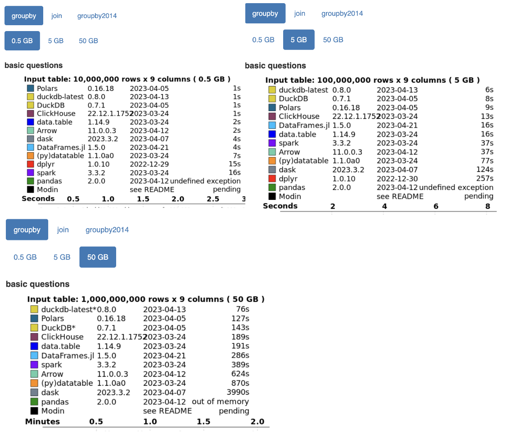
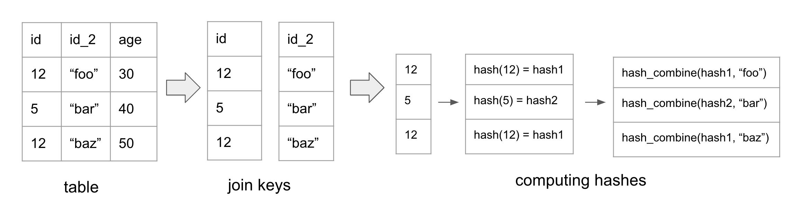
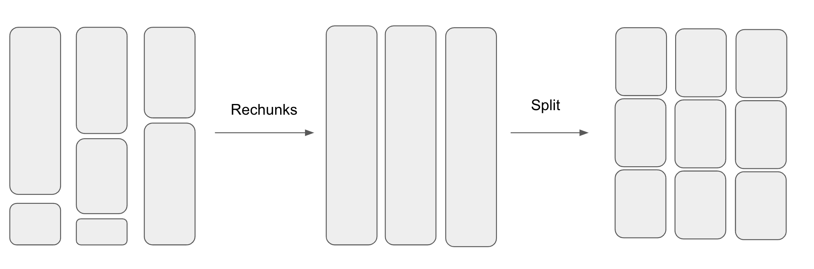
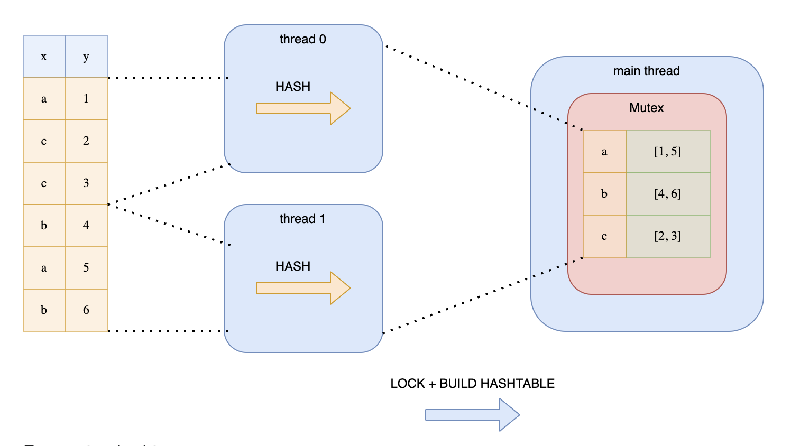
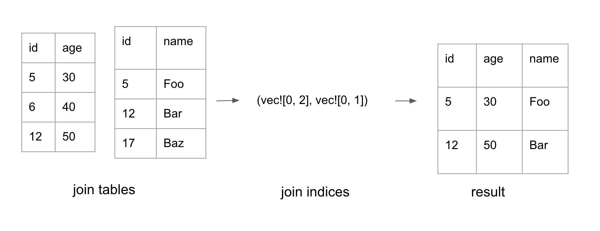

Motivation
I recently spent a lot of time exploring the internals of Polars, the lightning-fast DataFrame library built on top of Arrow2. I also built my own toy DataFrame library (full source code available) to make sure I understand the material better. I reused the same abstractions/APIs and reimplemented many algorithms used in Polars.
It all started when I came across a blog post by Ritchie Vink, the creator of Polars, titled "I wrote one of the fastest DataFrame libraries." The post highlighted Polars' impressive performance in benchmarks. I was inspired and wanted to see for myself what makes the library so fast.
Here are some screenshots from the recent h20.ai benchmark for groupby queries conducted by DuckDB to showcase how fast Polars is.
In this blog, I will provide detailed explanations of how Polars implements Join, Groupby, Filter, and more.
What is Polars?
TODO: Explain what Polars is
What is Arrow?
TODO: Explain what Arrow is
ChunkedArray
ChunkedArray is the primitive array type in Polars. Each column in a DataFrame (a table) is basically a ChunkedArray.
You can create a ChunkedArray like this:
#![allow(unused)] fn main() { let c1 = ChunkedArray::new("foo", [1, 2, 3, 4, 5]); }
ChunkedArray is semantically equivalent to a single array, but each ChunkedArray is actually composed of a list of Arrow2 arrays, the Rust implementation of the Arrow memory layout. This list is stored in the chunks property as shown below:
#![allow(unused)] fn main() { pub struct ChunkedArray<T: PolarsDataType> { pub(crate) chunks: Vec<ArrayRef>, ... } pub type ArrayRef = Box<dyn Array>; // Arrow2 Array }
There are a few reasons behind storing data in chunks of Arrow2 arrays.
Firstly, performing append to a ChunkedArray is cheap because the new array can just be added to the chunks property instead of causing a reallocation of the entire array.
Secondly, as stated in Apache Arrow’s documentation, Arrow arrays are immutable. Therefore, it’s possible to have multiple zero copy views (or slices) of the array. This makes operations such as cloning or slicing cheap since it just creates another pointer to the same allocation.
Type
Each element in the ChunkedArray must have the same type. This is because the Arrow Columnar Format specifies that all elements in the Array must have the same type. This makes it SIMD and vectorization-friendly. Supported data types in Polars are listed here.
Validity
In Apache Arrow, any value in an array may be semantically null. Each array has a validity bitmap that specifies whether the value is null.
Primitive Array
We mentioned that Chunked Array is just an array of Arrow arrays. Let’s actually look at what Arrow arrays are. PrimitiveArray is the Rust implementation of the Apache Arrow array. Conceptually, PrimitiveArray is an immutable Vec<Option<T>>.
#![allow(unused)] fn main() { pub struct PrimitiveArray<T: NativeType> { data_type: DataType, values: Buffer<T>, validity: Option<Bitmap>, } }
Buffer is a data structure that can be shared across threads and can be sliced and cloned in O(1).
The validity property stores whether each element in the array is null or not in a BitMap, which is semantically equivalent to Arc<Vec<bool>>.
In other words, to initialize a PrimitiveArray, you need the data type, the raw values, and an array that specifies whether each element is null. For example:
#![allow(unused)] fn main() { let primitive_array = PrimitiveArray::new( ArrowDataType::Float32, vec![12, 15, 16].into(), Some(vec![true, false, true].into()) ); }
Now that we know what a ChunkedArray is, let’s look at how some of its operations are implemented.
Filter
A frequently performed task in a DBMS is row filtering, which involves applying a predicate (boolean mask) to selectively filter rows.
This is what the Filter function does. Filter is a method on each ChunkedArray that takes a BooleanChunked and returns a filtered ChunkedArray.
For example:
#![allow(unused)] fn main() { let array = ChunkedArray::new("foo", [1, 2, 3, 4]); let predicate = ChunkedArray::new("pred", [true, false, false, true]); let filtered = array.filter(&predicate); // Output: ChunkedArray("foo", [1, 4]); }
The Filter-Trick
An optimization that Polars uses for filtering is “the filter trick”, as Ritchie calls it in his blog.
The idea originates from the observation that having to iterate each bit in the filter mask and having to copy each value to the output array one by one is slow.
Oftentimes, there are sequences of consecutive values that can be skipped. For instance, if there are 1000 consecutive 0s, it is preferable to skip them rather than iterating over each one individually.
The filter-trick first loads the bit array into an any integer type, such as u64. By doing so, we know that the numbers can range from 64 consecutive 1s ( 11...1s) to 64 consecutive 0s (00...0)s.
If the integer belongs to any of the following entries, then we can do a memcpy to efficiently copy the value to the output. For example, if the binary is equivalent to 2^64 - 2^2, then we can just copy the first 63 values into the output array.
If you want to look at the code, the filter-trick lives inside the Arrow2’s filter function. The algorithm first loads the bit array into u64 integers.
It then checks if the loaded integer falls in any of the entries above. This is achieved by getting the leading ones in the number and checking if that is equal to the total number of 1s in the number. If it is, then the first N elements can be copied to the destination.
As stated in Ritchie’s blog, if the predicate bit array alternates between boolean values, such as [true, false, true, false, ..., true, false], then the trick has an overhead.
Sort
Sorting in Polars is a relatively straightforward operation. The main optimization it performs is that it parallelizes sorting the data with Rayon’s par_sort_unstable_by method.
The current implementation of par_sort_unstable_by uses quicksort. Quicksort can be broken down into two stages - partitioning the array into two halves and then recursively performing quicksort on both halves. The partitioning phase needs to be sequential, but the recursive calls can be performed in parallel.
Here is Polars’ code:
#![allow(unused)] fn main() { POOL.install(|| match descending { true => slice.par_sort_unstable_by(descending_order_fn), false => slice.par_sort_unstable_by(ascending_order_fn), }) }
Dealing With Validity with Branchless Code
Earlier, we mentioned that each value in Arrow2’s array can be null. This slightly complicates the implementation because we need to keep track of which values are null and which values aren’t during sorting. This may involve a lot of conditional code branching.
Luckily, Arrow2 stores the raw values and the validity bitmap (the bitmap stores information about whether or not the value is null) separately. This means that we can just ignore the null values until the end of the operation. Let’s look at what I mean by that.
When Polars performs sorting on arrays with null, it places all the nulls at the end of the sorted array (or front if the user chooses to do so). Polars first filters out the non-null values and performs parallel sorting on them. It then fills out the null values with the default value as follows:
#![allow(unused)] fn main() { let iter = std::iter::repeat(T::Native::default()).take(null_count); vals.extend(iter); }
Computing the final validity Bitmap is also straightforward. Since all the null values are at the front of the array, the validity Bitmap is true for the first len - null_count elements and false for the final null_count elements.
Here is the code:
#![allow(unused)] fn main() { let mut validity = MutableBitmap::with_capacity(len); validity.extend_constant(len - null_count, true); validity.extend_constant(null_count, false); }
In Ritchie’s blog, he points out that by storing the validity bitmap separately from the buffer (raw value), it is easy to write branchless code by ignoring the null buffer during the operation. Then when the operation is finished, the null bit buffer is just copied to the new array. The sort algorithm is a perfect example of what Ritchie meant.
Aggregate
Dataframe
A DataFrame is a two-dimensional data structure that holds tabular data. Operations that can be executed on DataFrame are similar to what SQL queries do on tables. You can perform joins, groupby, and more queries.
A dataframe is composed of a collection of Series of the same length.
#![allow(unused)] fn main() { pub struct DataFrame { pub columns: Vec<Series>, ... } }
Each Series is just a wrapper around a ChunkedArray. In fact, most of the time, implementations of Series look something like this:
#![allow(unused)] fn main() { pub(crate) struct SeriesWrap<T>(pub T); }
where T is the ChunkedArray.
Here is how you can create a dataframe:
#![allow(unused)] fn main() { let df = df![ "name" => ["a", "b","a", "b", "c"], "points" => [1, 2, 1, 3, 3], "age" => [1, 2, 3, 4, 5] ]; }
Now that we know what a dataframe is, let’s look at how Join and Groupby are implemented.
Join
Polars uses a lock-free parallel hash join algorithm. The technique that Polars uses is similar to the hash join algorithm presented in this CockroachDB blog.
Hash Join Refresher
The hash join algorithm consists of the following steps:
- Hash the join keys: compute the hash for each row in the two join tables.
- Build phase: compute the hash table for the smaller table. The key of the hash table is the join keys and the value is the index of the row
- Probe phase: for every row in the larger table, check if there’s a row in the hash table with matching join keys, If there is, add it to the result set.
Now, let’s talk about Polars’ version of hash join.
Hashing
Since Polars maintains data using a columnar format, Polars builds the hashes for the rows column-by-column to be CPU cache friendly.
The figure above showcases how hash values are computed. In the example, id and id_2 are the join keys of the table.
First, we calculate the hash for the id column. Next, we merge the hash of the id column with the value from id_2, resulting in a new combined hash. In the event of a third join key, we would merge the computed hash with the value of the third join key.
In general, we compute the hash for the first column. Then we use hash_combine(old_hash, value) on the subsequent columns to compute the new hashes.
This algorithm allows Polars to perform simple for loops over each column which is fast. In contrast, performing row-by-row hashing for columnar data is unfriendly to the CPU.
In Polars, each ChunkedArray needs to implement the [VecHasher trait](https://github.com/pola-rs/polars/blob/main/polars/polars-core/src/hashing/vector_hasher.rs#L21). This means that each column type needs to have the ability to calculate its own hash and combine it with other hashes.
#![allow(unused)] fn main() { pub trait VecHash { /// Compute the hash for all values in the array. fn vec_hash(&self, _random_state: RandomState, _buf: &mut Vec<u64>); fn vec_hash_combine(&self, _random_state: RandomState, _hashes: &mut [u64]); } }
Since my toy Polars implementation supports 3 data types - bool, i32, and Utf8, I looked at the hash algorithms used by Polars for vec_hash and vec_hash_combine with these data types. Here is a summary:
Integer
vec_hash: AHashvec_hash_combine: AHash
Bool
vec_hash: default Rust’s hash method - SipHash 1-3vec_hash_combine- _boost_hash_combine
Utf8
vec_hash- xxh3 hashvec_hash_combine- _boost_hash_combine
I didn’t look too deeply into why Polars chose these hash algorithms. But the author of Polars referenced this blog which contains the performance analysis of different hash combine algorithms.
Parallelizing computing hashes
Polars parallelizes computing the hashes when the number of rows get large. Parallelizing work over a dataframe isn’t as straightforward as parallelizing work across a single array. This is because each Series is composed of a ChunkedArray which is made up of chunks of Arrow2 arrays.
The number of chunks and the chunk sizes across the different Series are not aligned. So before splitting up the dataframe into N pieces, Polars first aligns the chunks by combining them into a single chunk before splitting them into N chunks. This process is shown in the diagram below.
After splitting the dataframe into smaller dataframes, Polars then uses Rayon to parallelize computing the hashes.
Building the Hash Table
After computing the hashes, we are finally ready to build the hash table. In Polars, the hash table’s type is HashMap<IdxHash, Vec<Idx> where IdxHash is:
#![allow(unused)] fn main() { struct IdxHash { // idx in row of Series, DataFrame pub idx: IdxSize, // precomputed hash of T pub hash: u64, } }
The HashMap stores indices instead of entire rows because it’s cheaper. It uses IdxHash as the key instead of Idx because different sets of join keys can have the same hash but different values. Thus, the hashmap stores both the hash and the index of the first unique row keys it encounters. When writing to the hash table, if the hash matches, it needs to compare the df rows to check if the join keys are the same.
Splitting Data to Multiple Threads
To speed things up, Polars parallelizes the construction of the hash table.
But as stated in Ritchie’s blog, we cannot simply split up the data amongst the threads. This is because the same keys may end up in different hash tables on different threads. This approach would require another synchronization phase to combine all the hash tables which is expensive.
Another approach is to split the data and wrap the hash table around a Mutex. Each thread would then acquire a lock before writing to the hash table. This is illustrated in Ritchie’s diagram:
This is not a good solution because the threads would be contending over the lock.
Instead, Polars uses a lock-free mechanism. Every thread would loop over the hashes. But depending on the hash value, each thread determines whether to add the hash into its hash map. This is determined by whether hash value % thread number = 0. This trick guarantees that all keys with the same value will end up in the same hash table. This technique is illustrated in Ritchie’s diagram:
Performing modulo on each hash may be expensive, especially for longer hashes. Polars avoid this by using a bitwise operation hack. This is the bitwise operation it performs:
#![allow(unused)] fn main() { (h.wrapping_add(thread_no)) & n_partitions.wrapping_sub(1) == 0 }
This optimization only works if n_partitions is a power of 2. This leverages the mathematical property that n % 2^i = n & (2^i - 1). The n_paritions is computed with this method which computes the closest 2^n above the number of threads.
Probe Phase
In the probe phase, Polars iterates through the hashes of the probe table. If there is a corresponding entry in the hash table, the indices for both tables are added to the result set. This forms a tuple of two lists with the same length: (Vec<IdxSize>, Vec<IdxSize>). Each list represents indices in its respective table.
Polars also uses Rayon to parallelize the probe phase. It divides the hashes for the probe table into N slices where N is the number of available threads.
Constructing the final table
The probe phase generates a pair of join indices, as shown above. The final phase is to convert the join indices into the final dataframe.
Polars parallelizes the work to filter each column by the indices. Each ChunkedArray may not store all its data in a single chunk. Therefore, when performing .get(idx), we need to first compute which chunk it lives in, then compute the relative index for that chunk. The logic to compute the chunk_idx and the actual idx is in this function.
After filtering each column by the indices, the columns can finally be composed together to form the final dataframe.
Code References:
The entry point to Join is here. For inner join, it calls _inner_join_multiple_keys to compute the join indices. That method first splits the df. It then computes the hashes in parallel.
Next, it creates the probe table. During construction of the probe table, it loops over each hash and determines if the hash belongs to the thread. If it is, it adds it to the local hash table.
After creating the probe table, it probes the other relation to create the join indices. Finally, it constructs the final table with the indices.
Groupby
GroupBy is an operation that allows people to group records based on certain attributes and perform aggregations on those groups. It is often used in combination with aggregate functions like SUM, COUNT, etc to summarize information for each group.
Here’s an example of GroupBy:
#![allow(unused)] fn main() { let df = df![ "name" => ["a", "b","a", "b", "c"], "points" => [1, 2, 1, 3, 3] ] let res = df .lazy() .groupby(vec!["name"]) .agg(vec![col("points").sum()]) .collect(); }
In this example, we group rows by the name column and aggregate the sum for each group. This would yield the dataframe:
| name | points |
|---|---|
| a | 2 |
| b | 5 |
| c | 3 |
GroupProxy
When developers perform df.groupby(...), they actually get back a GroupProxy, a temporary data structure that stores information about which rows belong to which groups. The most common variant of GroupProxy is GroupsIdx. This is its definition:
#![allow(unused)] fn main() { pub struct GroupsIdx { first: Vec<u32>, all: Vec<Vec<u32>>, } }
The indices of the rows belonging to the same group are stored together in the all vectors. The first index of each group is stored in the first vector.
If we look at the example:
#![allow(unused)] fn main() { let df = df![ "name" => ["a", "b","a", "b", "c"], "points" => [1, 2, 1, 3, 3] ] let group_idx = df .lazy() .groupby(vec!["name"]); }
In the example provided above, the GroupIdx is:
#![allow(unused)] fn main() { { first: [0, 1, 4], all: [ [0, 2], // indices of rows with col("name") = "a" [1, 3], // indices of rows with col("name") = "b" [4]. // indices of rows with col("name") = "c" ] } }
If there are multiple groupby keys, the same logic applies:
#![allow(unused)] fn main() { let df = df![ "name" => ["a", "b","a", "b", "c"], "points" => [1, 2, 1, 3, 3] ] .unwrap(); let groupby = df.groupby(vec!["name", "points"]).unwrap(); }
In this example, the GroupProxy is:
#![allow(unused)] fn main() { { first: [0, 1, 3, 4], all: [ [0, 2], // indices where col("name") = "a" & col("points") = 1 [1], // indices where col("name") = "b" & col("points") = 2 [3], // indices where col("name") = "b" & col("points") = 3 [4] // indices where col("name") = "c" & col("points") = 3 ] } }
Hash Group By
Polars uses hash group by to compute the GroupProxy for a dataframe given a set of group keys. This is very similar to the parallel hash join algorithm presented earlier. The overall idea is to use a hash table to group indices with the same group by keys.
Polars first computes the hashes for the by columns with the vectorized hashing technique that Hash Join uses.
Next, Polars parallelizes the creation of hash tables with the same modulo trick mentioned in the last section. Every thread traverses all hashes and ignores the ones that doesn’t belong to that thread.
Instead of storing the indices inside the hash table, the hash table stores the index of the all vector. The algorithm iterates through the hashes. If there is a matching entry in the hash table for a group key, it uses the index stored in the hash table to find the other indices in the same group in all and adds itself to it. Otherwise, it adds a new entry to the hash table and adds itself to the first and all vectors.
Given the earlier example:
#![allow(unused)] fn main() { let df = df![ "name" => ["a", "b","a", "b", "c"], "points" => [1, 2, 1, 3, 3] ] let res = df .lazy() .groupby(vec!["name"]) }
The figure below shows that the hash table stores the indices that correspond to the first and all tables.

Parallel Flattening
Since Polars parallelizes the grouping of rows, each thread creates a first and all vector. Thus, we end up with Vec<(Vec<IdxSize>, Vec<Vec<IdxSize>>)>. To create the GroupProxy, we need to flatten the vector.
The goal of flattening is to turn Vec<Vec<...>> into Vec<...>. Copying the elements one by one into the output vector may be slow when the number of elements is large. Polars utilizes available threads to flatten the array in parallel.
Polars guarantees that the output vector will not reallocate by initializing the output vector’s capacity to the exact size it will end up in. This makes it safe to parallelize the copying of individual vectors into the output vector. The capacity can be computed by summing up the sizes of the smaller vectors.
Each smaller vector needs to know the address to copy the values into. The offsets are pre-computed and the final address is derived from: first.as_mut_ptr().add(offset).
In Rust, mutable pointers does not implement the Sync trait so Rust will complain that *mut u32 cannot be shared between threads safely when using Rayon. Polars wraps the mutable pointer with a SyncPtr struct. The SyncPtr struct allows sending pointers to other threads when the developer is confident that the pointer will point to valid address.
#![allow(unused)] fn main() { pub struct SyncPtr<T>(*mut T); unsafe impl<T> Sync for SyncPtr<T> {} unsafe impl<T> Send for SyncPtr<T> {} }
Finally, Polars uses std::ptr::copy_nonoverlapping to copy value from the smaller Vecs to the new Vec.
I will talk about how Groupby is composed with aggregate functions in the LazyFrame section.
LazyFrame
Polars recommends using the Lazy API when dealing with performance-critical code. Unlike the eager API, the lazy API defers the execution until the end which allows Polars to perform query optimizations.
Here is an example of the lazy API:
#![allow(unused)] fn main() { df .lazy() .filter(col("age").gt(lit(25))) .groupby(vec!["team"]) .agg(vec![col("points").sum()]) .collect(); }
All lazy queries begin with the lazy() method. The execution of the query is delayed until collect is called. During execution, Polars first rearranges the query with optimizations like predicate pushdown, projection pushdown, type coercion, etc before actually executing the operations. Check out the list of optimizations used by Polars.
LazyFrame and LogicalPlan
When lazy() is called, the dataframe is converted to a LazyFrame.
#![allow(unused)] fn main() { pub struct LazyFrame { pub logical_plan: LogicalPlan, ... } }
LazyFrame is just an abstraction around LogicalPlan. A LogicalPlan is an enum of transformations that makes up a query.
#![allow(unused)] fn main() { enum LogicalPlan { Selection { input: Box<LogicalPlan>, predicate: Expr, }, Join { input_left: Box<LogicalPlan>, input_right: Box<LogicalPlan>, left_on: Vec<Expr>, right_on: Vec<Expr>, .. }, ... } }
Operations like filter, select, join, etc creates the LogicalPlans.
#![allow(unused)] fn main() { lf.filter(col("age").gt(lit(25))) }
For example, here is a simplified implementation of filter:
#![allow(unused)] fn main() { impl LazyFrame { pub fn filter(self, predicate: Expr) -> LazyFrame { let lp = LogicalPlan::Selection { input: Box::new(self.logical_plan), predicate }; LazyFrame::from_logical_plan(lp) } } }
If you want to look at the logical_plan constructed by your query, you can perform:
#![allow(unused)] fn main() { lazy_frame.logical_plan.describe() }
Optimization
When collect is called, it will optimize and rearrange the logical plan. The optimized logical_plan will then be converted to a physical_plan. A physical plan is an [Executor](<https://github.com/pola-rs/polars/blob/main/polars/polars-lazy/src/physical_plan/executors/executor.rs#L10>) that can generate a dataframe. For example, here is the physical plan for filter and here is the function that converts a logical plan to a physical plan.
If you want to look at the optimized logical plan, you can perform:
#![allow(unused)] fn main() { lazy_frame.describe_optimized_plan() }
You can also turn each optimizers on and off like this:
#![allow(unused)] fn main() { lf.with_predicate_pushdown(true) .describe_optimized_plan() }
In the remaining sections, we will deep dive into a couple of optimizations Polars uses.
Predicate Pushdown
A logical plan in Polars has a tree-like structure. Each node represents a query operation. During execution, the child nodes get executed first before the parent nodes do.
Predicate pushdown is an optimization technique to push the filtering operations (predicates) down the tree, closer to the source. The idea is that the earlier we apply the filter conditions during execution, the less data we have to process.
For example, suppose we have the query:
#![allow(unused)] fn main() { df .lazy() .select([col("A"), col("B")]) .filter(col("A").gt(lit(1))); }
Here is the original logical plan:
#![allow(unused)] fn main() { FILTER [(col("A")) > (1)] FROM SELECT [col("A"), [(col("B")) + (2)]] FROM DF ["A", "fruits", "B", "cars"]; PROJECT */4 COLUMNS; SELECTION: "None" }
Here is the optimized plan:
#![allow(unused)] fn main() { SELECT [col("A"), [(col("B")) + (2)]] FROM DF ["A", "fruits", "B", "cars"]; PROJECT 2/4 COLUMNS; SELECTION: [(col("A")) > (1)] }
By pushing the predicate, col("A") > 1 down to the dataframe operation, we avoid having to fetch and process all the rows that don’t fit the condition.
Algorithm
The core algorithm is really simple. Here is a pseudo-code of the algorithm:
#![allow(unused)] fn main() { fn optimize(logical_plan) -> logical_plan { let acc_predicates = EMPTY_COLLECTION push_down(logical_plan, acc_predicates) } fn push_down(logical_plan, acc_predicates) -> logical_plan { match logical_plan { LogicalPlan::Selection { predicate, input } => { acc_predicates.add(predicate) push_down(input, acc_predicates) }, LogicalPlan::DataFrameScan { df, selection } => { LogicalPlan::DataFrameScan { df, selection: combine_predicates(selection, acc_predicates) } } } } }
The optimize function takes a logical plan and returns an optimized logical plan. It starts off by initializing an empty collection of predicates. It then recursively calls push_down to compute the optimized logical plan for its children.
When lazy_frame.filter(predicate) is called, a LogicalPlan::Selection is created with the lazy_frame becoming the input of the Selection. When push_down encounters a LogicalPlan::Selection, the algorithm adds the predicate to the acc_predicates and returns pushdown(input, acc_predicates. In other words, we removed the Selection operation since we pushed down its predicate.
When df.lazy() is called, it actually creates a LogicalPlan::DataFrameScan. This is the leaf node in a logical plan. When a push_down reaches a DataFrameScan node, it adds the acc_predicates to the DataFrameScan node.
If you want to look at Polars code, here is the optimize function. We can see that it calls push_down on the root logical plan. Each time the traversal encounters any LogicalPlan::Selection it’s added to the accumulated predicates and replaced with the pushed down version of its child.
Pushdown + Join
Join is trickier since it has the left and the right logical plans. For each accumulated predicates, we need to figure out whether to push it to the left plan, right plan, or neither.
Let’s look at an example:
#![allow(unused)] fn main() { let df1 = df![ "foo" => ["abc", "def", "ghi"], "idx1" => [0, 0, 1], "a" => [1,2, 3] ]; let df2 = df![ "bar" => [5, 6], "idx2" => [0, 1], "b" => [1, 2] ]; lf .lazy() .join(df2.lazy(), [col("idx1")], [col("idx2")], JoinType::Inner) .filter(col("bar").eq(lit(5i32))) .filter(col("foo").eq(lit("abc"))) .filter((col("a") + col("b")).gt(lit(12))); }
In this example, we have a join on idx1 of df1 and idx2 of df2. We have 3 filter conditions:
- predicate 1:
col(”bar”) = 5, the“bar”column belongs todf2 - predicate 2:
col("foo") = "abc", the"foo"column belongs to df1 - predicate 3:
col("a") + col("b") > 12, the"a"column belongs todf1but the"b"column belongs todf2.
Here is the logical plan:
#![allow(unused)] fn main() { FILTER [([(col("a")) + (col("b"))]) > (12)] FROM FILTER [(col("foo")) == (Utf8(abc))] FROM FILTER [(col("bar")) == (5)] FROM INNER JOIN: LEFT PLAN ON: [col("idx1")] DF ["foo", "idx1", "a"]; PROJECT */3 COLUMNS; SELECTION: "None" RIGHT PLAN ON: [col("idx2")] DF ["bar", "idx2", "b"]; PROJECT */3 COLUMNS; SELECTION: "None" END INNER JOIN }
Here is the optimized plan:
#![allow(unused)] fn main() { FILTER [([(col("a")) + (col("b"))]) > (12)] FROM INNER JOIN: LEFT PLAN ON: [col("idx1")] DF ["foo", "idx1", "a"]; PROJECT */3 COLUMNS; SELECTION: "[(col(\\"foo\\")) == (Utf8(abc))]" RIGHT PLAN ON: [col("idx2")] DF ["bar", "idx2", "b"]; PROJECT */3 COLUMNS; SELECTION: [(col("bar")) == (5)] END INNER JOIN }
We can see that predicate 1 has been pushed down to df2, predicate 2 has been pushed down to df1. predicate 3 has not been pushed down to either since it uses columns from both children.
In simple terms, for each predicate, the algorithm checks if all the columns used in that predicate belongs to either the left or right child. If it is, it can be pushed down. Otherwise, it needs to be applied locally.
Here is the code for how Polars deals with Join during push_down. For each predicate, Polars checks if it can be pushed down to the left subtree or the right subtree. If neither, it is pushed to the local_predicates. In that case, the local predicates are wrapped around a Selection logical plan instead of being pushed down.
Pushdown Boundaries
The algorithm described above mishandles some edge cases. There are scenarios where pushing down predicates is not allowed. In those cases, we need to apply the predicates locally.
#![allow(unused)] fn main() { let df = df![ "vals" => [1, 2, 3, 4, 5] ] .unwrap(); let lazy_df = df .lazy() .filter(col("vals").gt(lit(1))) // should be > 2 // if optimizer would combine predicates this would be flawed .filter(col("vals").gt(col("vals").min())); }
This example is borrowed from one of the unit tests in Polars. In this example, we first filter out elements that are ≤ to 1. Then we filter out elements that are ≤ to the minimum of the remaining elements, which is 2. The result from this would be:
If we combined the two predicates, we would get the following filter operation
#![allow(unused)] fn main() { .filter( col("vals").gt(lit(1)) .and( col("vals").gt(col("vals").min()) ) ); }
This would yield the wrong answer because 2 would be in the final output whereas it wouldn’t before the predicates are combined. This is because the first predicate affects the elements that are available to the min() operation.
In general, predicates should not be projected downwards if it influences the results of other columns.
In this example, the logical plan is:
#![allow(unused)] fn main() { FILTER [(col("vals")) > (col("vals").min())] FROM FILTER [(col("vals")) > (1)] FROM DF ["vals"]; PROJECT */1 COLUMNS; SELECTION: "None" }
The optimized plan is:
Projection Pushdown
TODO